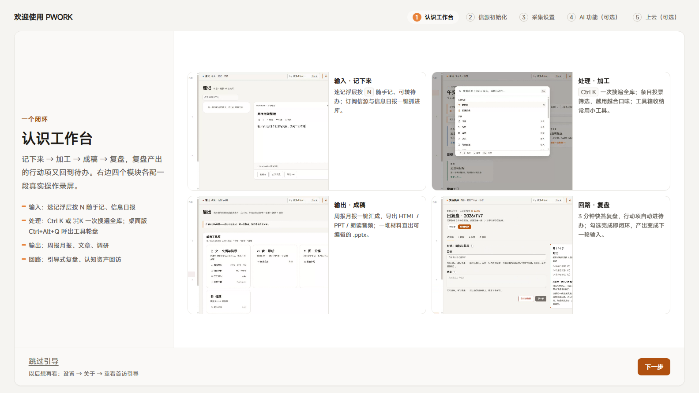

一个装在你电脑里的
个人工作台，数据只属于你
记下来、加工、成稿、复盘，四步连成一个循环——全部在你自己的电脑上运行：不上传、不注册、断网也能用。
随手速记、订阅网站更新、每天一份信息日报、一次搜索找出所有内容、一键生成周报和 PPT、复盘后的行动项自动进待办。该有的都有，多余的一样没有。
为每天要写东西、要读东西、要交东西的人做的——写作者、研究者、自由职业者，或者任何不想把笔记交给别人服务器的人。

为什么是字母 P？因为它同时是三样东西
很多人问那个橙色的圆标是什么意思。答案很简单：它是一只耳朵，一只伸出的手，也是 Partner 的首字母——这三件事，就是 PWORK 的全部设计哲学。
PWORK 学会的第一件事是「听」：你随手速记的、订阅抓来的、开会时说的，它都默默收好、整理成档。但它只在你自己的电脑里听——你的话，不出门。
圆圆的手掌向上摊开，是「递东西」的姿势：每天一份信息日报、一键成稿的周报和 PPT、复盘后自动排队的行动项——都是它整理好，伸手递到你面前的。
P 也是 Partner 的 P。它不是一台催你干活的效率机器，是一个只属于你的工作伙伴：不注册、不上传、开源免费，打算陪你很多年。应用里那个常驻的橙色圆钮，就是它——有事随时「问小 P」。
所以下次看到这个橙色的 P，希望你想起的不是「一款软件」——是那个一直在你电脑里、听你说、帮你做的伙伴。
每一轮工作，自动变成下一轮的起点
复盘列出的行动项自动进待办，做完打勾就算完成——这一轮做出来的东西，自动变成下一轮的素材。
复盘的行动项自动进待办 → 做完的成果又变成下一轮的素材——这个循环是自动的
先说清楚什么不做，再说能做什么
全部数据都存在你自己的电脑里，随时可以打包搬到新电脑，也可以导出成一份能直接阅读的文件夹。没有账号，也没有「同步到我们服务器」这种事——因为根本没有我们的服务器。
不配 AI，信息筛选、报告生成全部用你电脑上的规则完成，功能完整。想用 AI，把自己在大模型平台申请的 Key 填进来就行；Key 只写进你电脑上的文件，不经过任何第三方。
想要全天候自动收信源、多设备同步？在你自己的 Cloudflare 账号里装一套就行（免费档每月 0 元）——装在你自己的账号下，地址和密钥都归你。
上面说的每一条，都有可以核对的东西
下面是这段介绍对应的真实核对结果：五百多项自动化测试在每一次代码改动后全部重跑，发布包的校验值公开可查。数据在你电脑上，所以这些证明也必须经得起你自己核对。
$ npm run test ✓ 542 项自动化测试全部通过 （单元 + 集成，每次提交全量重跑） $ 发布包校验 ✓ PWORK_0.1.17_x64-setup-online.exe Windows 安装包 ✓ PWORK_0.1.17_aarch64.dmg macOS 安装包（Apple Silicon） ✓ sha256 校验值公开挂在发布页 下载后可自行核对 $ 数据去向 本地 全部业务数据 · 本地 AI 密钥 · 无 服务器上传通道
免费开源，不该等于没人管
很多人对开源软件的担心是：作者扔下一个链接就消失了。PWORK 不这样经营——下载、更新、提问、看记录，每一步都有人在维护。
安装包放在国内对象存储上，直链下载，不等 GitHub 的龟速；发布页挂着校验值，下载完可以对一遍再装。
出新版本，应用里一键升级，更新通道同样走国内直连——装完这一次，后面不用再手动下载。
Windows 与 macOS 安装包同一时间发布，macOS 的包由云端自动构建，不会让你等「另一个平台的版本还没出」。
代码在 Gitee 同步镜像，网络不畅时看源码、提问题都不受影响。
八个版本，每一版改了什么都写在发布说明里，改了什么、没改什么，历史记录全部可回溯。
微信交流群和 GitHub Discussions 都开着，用着别扭的地方直接说——好的想法，会变成下一个版本。
- 手机端两步配对：桌面出二维码，手机扫一下即完成云端配置，全程不进 Cloudflare 控制台
- 部署完零控制台：一键部署后端点、Token、账户、数据库四项自动填好
- 条目库按月浏览：上千条不再卡，更早的条目按月份翻到
- AI 全库问答修好自然语言：整句话提问恢复正常
- 删除确认统一为应用内弹层（危险操作红键）；加载状态不再闪「0 条」
- 通知中心：提醒不再弹完即失，铃铛带未读数，可回看历史
- 手机端导航重构：21 个页面全部直达，子页标签一键切换
- 侧栏「最近打开」与版本公告卡；帮助页重排 + 数据流向图
- 设置分类四字命名，全站文案瘦身
- 条目正文全文：自动抓全文进库参与检索，应用内阅读视图
- 划选摘录：看文章划两句直接存进速记，自动带出处
- 速记图片附件：截图 Ctrl+V 直接贴，一条最多 10 张
- 历史数据搬家：书签、Obsidian、flomo、Notion、印象笔记选文件即导
- 工具轮盘悬浮小窗：鼠标边弹出不夺焦点，还能一键置顶任何窗口
- 信源健康自检：噪声源、零命中源自报，还会推荐值得订阅的源头
- B站 UP 主、YouTube 频道可当订阅源；剪贴板速记 Ctrl+Alt+V
- 信息日报主题异动点名；更新源国内直连
- 安装包 48MB 瘦到 8MB：下载从几分钟变几秒
- 迁移窗口重做：实时进度条 + 看门狗，不再有卡死的静默画面
- 给开发者的 Shell 通知桥：命令跑完一行 curl 弹通知
- 数据独立成文件：pwork.db 单文件可直接复制备份
- vault 镜像：每条数据一个 Markdown，Obsidian 等工具直接可读
- 应用内更新首次真实命中：装一次，后面一键升级
- 数据防丢三道闸：持久化保护 + 每周自动备份 + 启动健康检查
- 可读档案：全库导出 zip，每条数据一个 Markdown 可回导
- AI 全库问答；键盘快捷键自定义；macOS 内测首包
- 一键上云在应用里完成，不再弹终端窗口
- 信息日报自动保鲜；AI 厂商扩到 16 家；工具轮盘可视化编辑
- 修复桌面版点击外链没反应的问题
- 侧栏 GitHub 入口与明暗主题切换
- 开源首发（MIT）：源码全部公开，欢迎审查与共建
- 首访引导定稿；联网版与完全离线版双安装包
完整版本历史在 GitHub 发布页——每一版、每一条改动，都留着。
按你的设备选，页面会帮你认出来
约 11MB，走国内直连下载，双击安装——机器上缺的运行环境它会自动补齐，装完自动进入 5 步上手引导。首次打开若提示「已保护你的电脑」，点「更多信息 → 仍要运行」即可（内测版暂未购买签名，见下方常见问题）。离线版与历史版本在 GitHub 发布页。
下载 Windows 联网版 →适用于 M 系列芯片的 Mac，同样走国内直连下载。内测首包首次打开需放行：先打开一次（会提示「已损坏」），到 系统设置 → 隐私与安全性 点「仍要打开」。Intel 芯片的 Mac 暂无安装包，可先用浏览器方式。
下载 macOS 版 dmg →用 Chrome 或手机自带浏览器打开 pwork.loganlink0.cn/demo，点浏览器右上角菜单，选「添加到主屏幕」（有的浏览器叫「安装应用」），就像装了一个应用——数据存在手机浏览器的本机存储里。点添加后确认框可能要等几秒到十几秒（浏览器在验证资源），属正常。夸克等部分浏览器没有这个菜单项，换上面的浏览器即可；页面有新版本时会自动刷新。
打开演示地址 →下载项目到电脑，在 app 目录安装依赖后一条命令就能启动；也可以像应用一样装进浏览器。适合不想装桌面包、想先摸一摸的人。
看快速开始 →全部代码公开：界面、桌面安装包、云端同步服务、部署脚本都在仓库里，五百余项自动化测试可以自己跑一遍验证。
浏览源码 →问得最多的五件事
我的数据存在哪里？换电脑怎么办？
全部数据存在你自己的电脑里。换电脑：在设置里点「全量导出」得到一个备份文件，新电脑上「导入」即可；也可以导出成一份能直接阅读的文件夹（每条记录一个 Markdown 文件）。
必须配置 AI 才能用吗？
不必须。不配 AI 时信息筛选、报告生成全部用本机规则完成，功能完整。想用 AI 时，把自己在大模型平台申请的 Key 填进应用即可，支持 16 家厂商，Key 只写进你电脑上的文件。
首次打开 Windows 提示「已保护你的电脑」、macOS 提示「已损坏」——软件有问题吗？
软件没有问题，这是系统对「没有注册开发者身份的软件」的固定提醒——我们还没向微软、苹果支付每年数百美元的签名费用（内测阶段暂不购买，正式版会处理）。PWORK 是开源软件，安装包里的内容任何人都可以自行核对。放行方式：Windows 点「更多信息」→「仍要运行」；macOS 先打开一次（会提示已损坏），到 系统设置 → 隐私与安全性 点「仍要打开」，或按发布页给出的终端命令放行。
云端同步是必须的吗？数据会不会上传？
不是必须。不配置云端，一切功能照常、数据永不离开你的电脑。想要多设备同步与全天候自动收信源，需要在你自己的 Cloudflare 账号里部署一套（免费档），应用提供一条命令的引导部署。
软件免费，后续会收费或加广告吗？
代码 MIT 许可全部公开，界面无广告、无账号体系、无遥测。这个立场写在仓库里，代码就是证据。
用着别扭的地方，直接说出来
PWORK 还在内测，每一个真实使用里的问题都比想象中值钱。三种方式都在：说缺陷、提想法、或者就聊聊你怎么用。
提问、提想法、晒你的用法都在 GitHub Discussions——作者会逐条回复，好的想法会变成更新。缺陷报告附上「设置 → 数据管理」导出的错误日志，修起来最快。
去 Discussions →想即时聊、或者发截图不方便用 GitHub 的，扫码进「PWORK 内测群」。群二维码会过期，过期后以应用内最新为准：帮助 → 常见问题 的反馈区，或 设置 → 关于。
能复现的缺陷直接开 issue（选「bug 报告」模板），写上系统版本和复现步骤；错误日志导出文件可以直接拖进 issue。
开 issue →请作者喝杯咖啡
PWORK 永久免费开源。如果它对你的日常有帮助，欢迎扫码赞助——完全自愿，与任何功能无关。
赞助金额随意、不设门槛；不赞助也请放心使用——所有功能永久免费。